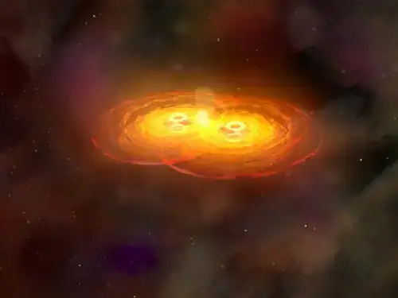
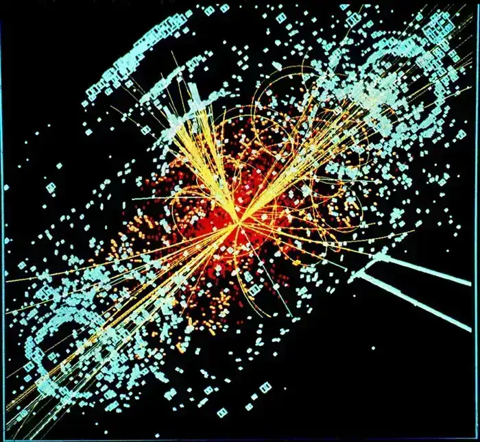

The theory
Loop quantum gravity, developed from the late 1980s by Abhay Ashtekar, Carlo Rovelli, Lee Smolin and others, quantises spacetime geometry itself. Space is described by spin networks — graphs with quantised areas and volumes — and the theory is background-independent, meaning it does not assume a fixed spacetime to put the theory on.
Maps, diagrams and images




That last property is its main attraction: general relativity is background-independent too, and string theory is not, which is the substance of the long argument between the two programmes.
The problem
The discreteness scale is the Planck length, about 10⁻³⁵ metres, which is 20 orders of magnitude below anything a collider can probe. The theory's potential observable signatures — modified dispersion of light at extreme energies, a specific imprint on the cosmic microwave background — have been looked for and not found, and the theory is not yet complete enough to make a sharp prediction.
Documented: the formalism, and the results that made it a serious programme.
Not found: any experimental signature.
Not complete: the theory cannot yet recover the full standard model or make a sharp prediction.
Contested: whether the semiclassical limit works — whether it reproduces ordinary spacetime at large scales.
The honest label: live debate — a genuine research programme, judged on mathematics rather than data, for now.
Why it is in the archive
Because it is the archive's example of a claim that is entirely mainstream and entirely untested, and because the honest answer — 'we do not know whether this describes the world' — is the same answer the archive gives to much stranger claims, for different reasons.
Open resources on this topic
- BookThe Barbero-Immirzi Parameter as a Scalar Field: K-Inflation from Loop Quantum Gravity? — ['Victor Taveras', 'Nicolas Yunes'] · 2008 (Internet Archive, free to read)
- BookThe theta parameter in loop quantum gravity: effects on quantum geometry and black hole entropy — ['Danilo Jimenez Rezende', 'Alejandro Perez'] · 2007 (Internet Archive, free to read)
- BookThe radiation equation of state and loop quantum gravity corrections — ['Martin Bojowald', 'Rupam Das'] · 2007 (Internet Archive, free to read)
- PapersOpen-access articles: DOAJ · PubMed Central · Internet Archive Scholar
- BooksPublic-domain and borrowable copies: Open Library · Project Gutenberg · Google Books
More images
Cite this page
Momin, S. (2026). Loop Quantum Gravity. The Larger World Archive. https://drsamonline.github.io/LARGE_GLOBE/loop-quantum-gravity.htmlMomin, Sohil. “Loop Quantum Gravity.” The Larger World Archive, 2026, https://drsamonline.github.io/LARGE_GLOBE/loop-quantum-gravity.html.Momin, Sohil. “Loop Quantum Gravity.” The Larger World Archive, 2026. https://drsamonline.github.io/LARGE_GLOBE/loop-quantum-gravity.html.@misc{loop2026loop,
author = {Momin, Sohil},
title = {Loop Quantum Gravity},
year = {2026},
howpublished = {The Larger World Archive},
url = {https://drsamonline.github.io/LARGE_GLOBE/loop-quantum-gravity.html},
note = {Last reviewed 20 November 2026}
}Last reviewed 20 November 2026 · Corrections policy · this page is not peer reviewed
Sources for this page
- Wikipedia, “Loop quantum gravity” — the theory and its statusen.wikipedia.org
- Wikipedia, “Quantum gravity” — the problem it addressesen.wikipedia.org
- Wikipedia, “Spin network” — the formalismen.wikipedia.org
- Wikipedia, “Planck length” — the scale that makes it untestable for nowen.wikipedia.org